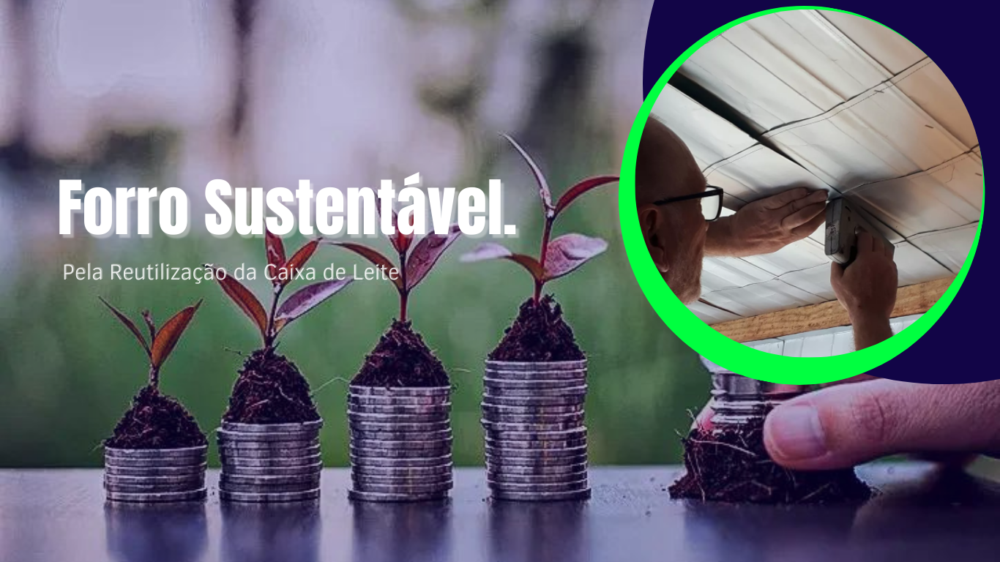
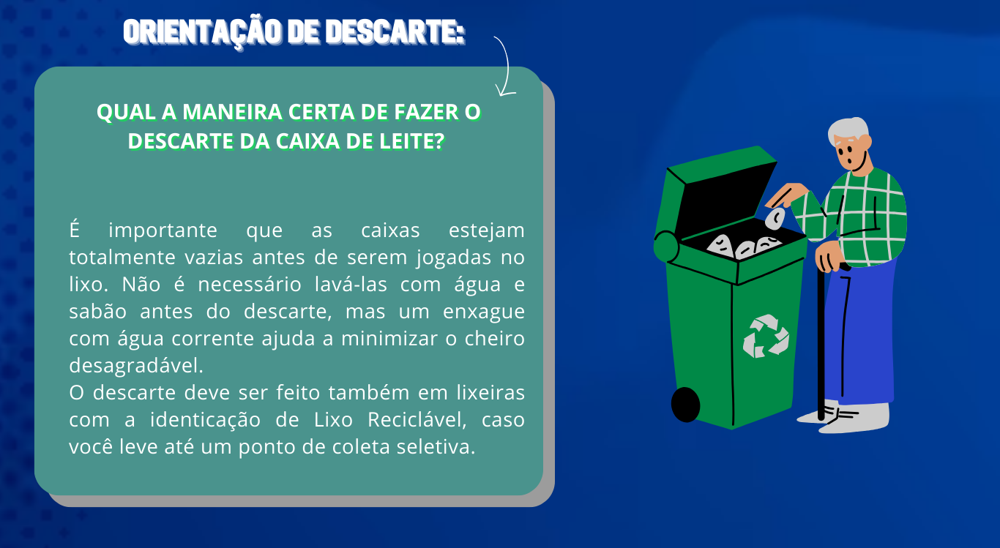

Forro Sustentável


Como Reciclar!
Aprenda a reciclar as caixas de leite para utilizar na criação do forro.

Como doar para ajudar o projeto
Veja aqui os principais endereços para fazer a doação das caixinhas de leite descartadas.
Nosso site foi desenvolvido para informar e orientar sobre reaproveitamento, reciclagem, fabricação e execução de materiais produzidos a partir de resíduos descartados incorretamente.
Devido à preocupação com o descarte incorreto das caixas de leite, criamos este site para orientar as pessoas, não só na correção do descarte de resíduos, mas também com informações sobre os impactos ambientais causados.
Acessar a Câmera
